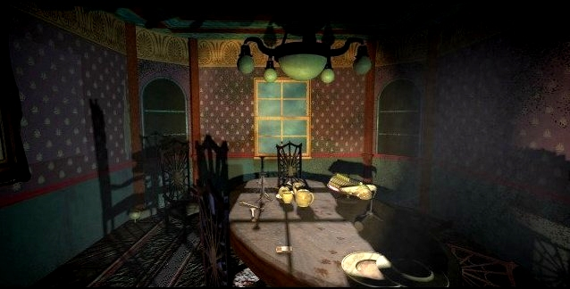
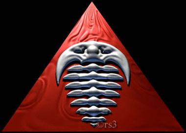

"What the heck is a Trilobyte?"
The diningroom features all kinds of downloads that are related to the 11th hour. From patches to wav's, from animations to a desktop-package. Satisfy your downloading needs and indulge.
A collection of wav's
Here you can find the '.wav' package that I made. Now you can hear Stauf everytime something
happens in Windows. Isn't that fun? It's like being in Stauf Mansion all day long. RAAAAAAH!!!
Quiz
I made a little quiz. This archive contains screenshots from the game. Do you know where I made
all these screenshots in the game? Test your 11th hour knowledge. The text file contains the
solutions to the pictures.
Animations and pictures
Hey, I still got some stuff I want to show you guys. These are some Trilobyte/11th hour related pictures and avi's.

A logo for Trilobyte, pretty obvious.
Christmas spirit at Trilobyte.
Patches and driver updates
If you have some problems with the groovie tm player in the 11th hour, try this update.
If you want an update for your gravis soundcard, click
Desktop package
This desktop package was not made by me. I found it on the Net, but it's very nice. It changes
the screens when Windows starts and shutsdown. It also has the beckoning hand as a cursor. Very
nice indeed.
Music archive
Tadie...tata...tada...tatatadaa, you guessed it. A music archive containing a huge amount of midi's.
GermanTrailer
In Germany the 11th hour was translated into german. This meant a German speaking
Stauf ("Carl, bist du krank, onder was!") but also a german commercial.
And here it is.